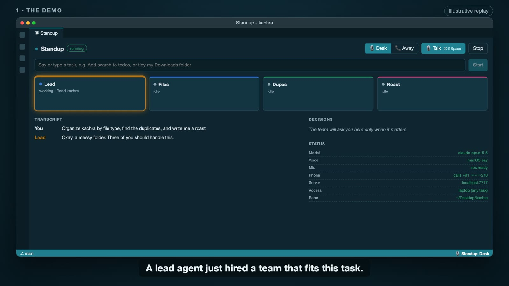

About 3 minutes with captions. The demo section is an illustrative replay of the real panel, not a live recording.
A team, not a chatbot
Describe a task by typing or speaking. A Lead agent hires only the teammates the task needs, and they get to work.
Hires the right team
The Lead reads the task and hires one to six agents. Each owns its own job, so they don't step on each other.
Talks like a standup call
Agents speak in their own voices, ask each other questions and negotiate before they build.
Asks only real questions
Small choices are made for you. A decision router sends you only the forks that matter.
Phones you when you're away
In Away mode a Bolna voice call reaches you, you answer by talking, and the agents carry on.
From a sentence to a finished task
Everything runs inside the VS Code extension host. Agents run on the Claude Agent SDK, and a typed event bus feeds the panel, the voices and the decision router.

The phone loop
A Bolna agent asks your question. Its custom function submit_decision posts your answer through an ngrok tunnel to a small server inside the extension. If the function never fires, the extension reads the full call transcript instead.
Stay in the repo, or use the whole laptop
One setting, standup.access, decides how far the agents can reach.
project (default)
Agents stay inside the repo and may only edit the folders they own.
laptop
Agents can do any task on the machine: files, apps, web research and system settings. Credentials stay blocked and risky actions ask first.
Enforced in code, not left to the model
Every tool call passes through a permission check before it runs.
Auto-approved
Package installs that pass an npm check: popular, not deprecated, and no install scripts.
Always asks
Deleting files, sudo, git push, curl piped to a shell, database migrations. By phone when you're away.
Blocked
SSH keys, cloud credentials and keychains are never readable or writable, whatever the task.
These are pattern-based checks, not a sandbox. Use laptop mode on a machine you're comfortable experimenting with.
The stack
Where it goes from here
Distinct voices
A Cartesia voice for every agent.
Smarter calls
More languages, and interrupting the agent mid-call.
Safer by design
Sandboxed tasks, an undo log and per-folder permissions.
More reach
Beyond macOS, and approvals by WhatsApp or SMS.
Cost and speed
Cheaper models for simple agents, the strongest for the Lead.
Proof
Replay a finished run from a saved log.